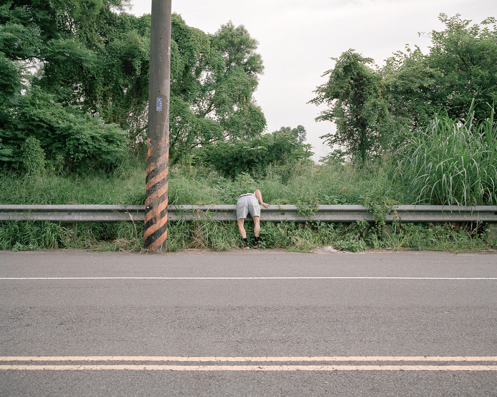

- 花卉、影像、文件、現成物 | 依空間而定 | 2016
- Mixed Media | Dimensions Variable | 2016
- 影像輸出 | 依空間而定 | 2016
單頻道錄像 | 10' 12'' | 2016 - Inkjet Print | Dimensions Variable | 2016
Single Channels Video | 10' 12'' | 2016

- 攝影裝置 | 依空間而定 | 2011
- Archival inkjet print | Dimensions Variable | 2011